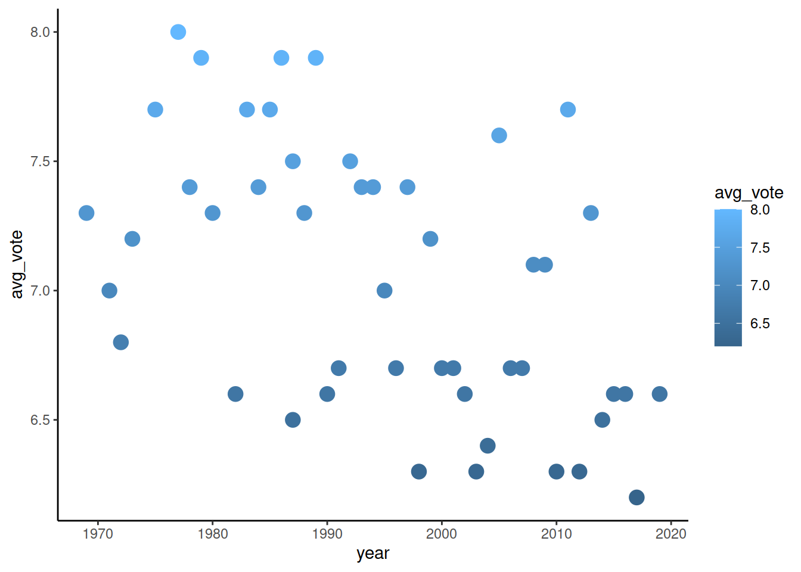
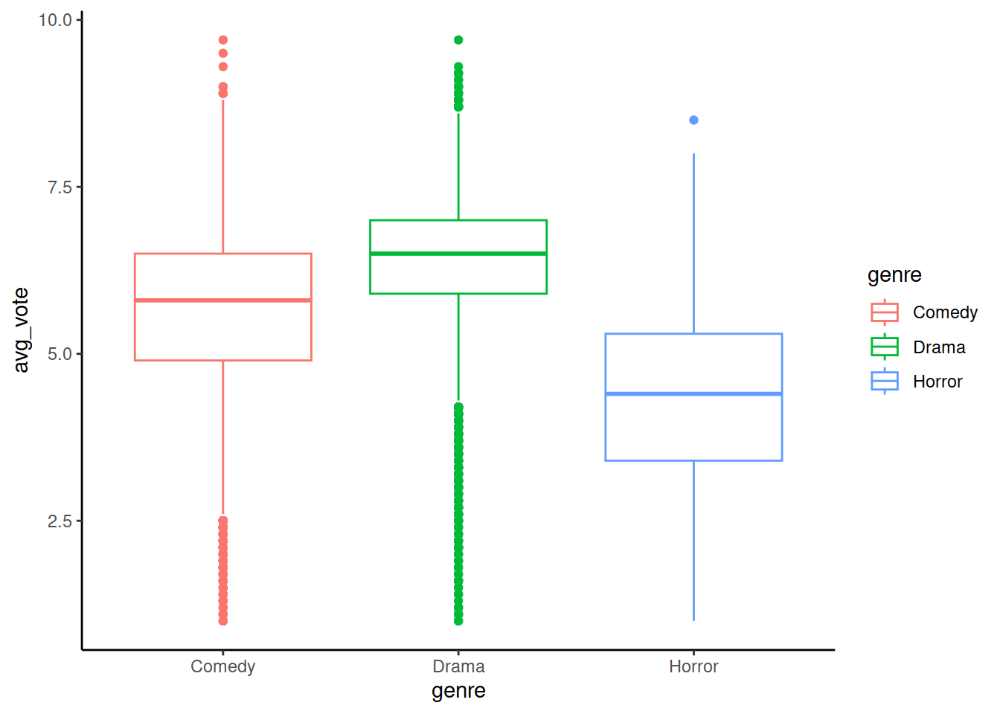

ggplot2 pt2
Решение домашки
Импорт и подготовка данных:
library(data.table)
library(ggplot2)
# задаем тему по умолчанию
theme_set(theme_classic())
diamonds_sample <- as.data.table(diamonds)
diamonds_sample <- diamonds_sample[carat < 3]
diamonds_sample <- diamonds_sample[sample(.N, 10000)]Решение заданий 2-5:
ggplot()+
# задание 1
geom_point(data = diamonds_sample,
# добавление color = cut -- решение задания 2
mapping = aes(x = carat, y = price, color = cut),
shape = 'diamond') +
# задание 3, закомментировано, так как для заданий 4-5 оно избыточно
# geom_vline(xintercept = 2) +
# geom_hline(yintercept = 15000) +
# задание 4
geom_rect(
aes(xmin = 2, xmax = Inf, ymin = 15000, ymax = Inf),
fill = 'green', alpha = 0.1
) +
geom_rect(
aes(xmin = -Inf, xmax = 2, ymin = -Inf, ymax = 15000),
fill = 'red', alpha = 0.1
) +
# задание 5, только цвет не 'black'
geom_point(data = diamonds_sample[(carat < 2 & price >= 15000)],
mapping = aes(x = carat, y = price), color = 'grey80', size = 1) +
geom_point(data = diamonds_sample[(carat >= 2 & price < 15000)],
mapping = aes(x = carat, y = price), color = 'grey80', size = 1) пакеты и данные
# подключаем библиотеки
library(ggplot2)
library(data.table)
# импорт данных
# imdb_link <- 'https://gitlab.com/hse_mar/mar221s/raw/master/data/IMDb movies.csv'
imdb_link <- './data/IMDb movies.csv'
tg_cols <- c("director", "title", "original_title", "year",
"genre", "duration", "country", "avg_vote")
imdb <- fread(imdb_link, select = tg_cols)
imdb[, year := as.numeric(year)]
imdb_woody <- imdb[director == 'Woody Allen']
imdb_martin <- imdb[director == 'Martin Scorsese']
imdb_lynch <- imdb[director == 'David Lynch']
imdb_wm <- rbind(imdb_woody, imdb_martin)
imdb_genres <- imdb[genre %in% c('Horror', 'Comedy', 'Drama')]
imdb_genres_scores <- imdb_genres[,
list(n_titles = .N, votes = mean(avg_vote)),
by = list(year, genre)] Статистические геомы
geom_bar()
Геом используется для отрисовки столбиковых диаграмм (барчартов). При использовании геома по оси ОХ указывают переменную категорий (даты, строковые значения и проч). У геома есть, среди прочих, есть важный параметр, stat.
Когда stat = 'count' (это значение по умолчанию), то ось OY указывать не надо. Так как при отрисовке графика происходит вычисление количества наблюдений (строк) на каждое значение по оси OX, и именно по этому вычисленному значению отрисовываются столбики. (предупреждение Removed 108 rows containing non-finite values (stat_count). означает, что есть пропуски в колонке title_year)
Когда stat = 'identity' (это значение надо пропиcывать), то необходимо указать и по значениям какой колонки строится ось OY. Этот вариант предпочтительнее в работе - лучше сначала явно создать отдельный объект, а потом его отрисовать, чем делать неявные вычисления при отрисовке графика. Здесь у нас не таблица с сырыми данными по фильмам, а агрегат по жанрам, который мы подготовили ранее (imdb_genres_scores).
# указываем год как x, а количество строк как y
ggplot(imdb_genres_scores[genre == 'Horror'], aes(x = year, y = n_titles)) +
geom_bar(stat = 'identity')geom_bar() aesthetics
Основные параметры:
- colour: цвет края столбика (названимем или rgb-кодом)
- fill: цвет заливки столбика (названимем или rgb-кодом)
- alpha: прозрачность заливки столбика
- position: если групп несколько, то как должны быть организвоаны столбики по группам - “стопкой” или “рядом”
Настройка визуальных параметров
Как и во всех геомах, можно использовать колонки датасета для того, чтобы задать цвет контура или заливки столбика. Обычно делается только в том случае, когда есть разные группы в датасете, и их надо выделить цветом. Во всех остальных случаях цвета контура и заливки, как правило, задаются фиксировнными значениями:
ggplot(imdb_genres_scores[genre == 'Horror'], aes(x = year, y = n_titles)) +
geom_bar(stat = 'identity',
color = 'darkblue',
fill = 'steelblue',
alpha = 0.1)Группировка может быть двух видов - “стопкой”, когда в столбике на одном значении OX выделены цветом группы. Это значение по умолчанию, и задается с помощью параметра position - 'stack'. Отрисуем, сколько фильмов разных жанров снимали каждый год. Цвета заливки и контура столбика задаем по значениям колонки genre (каждая страна выделяется одним цветом):
ggplot(imdb_genres_scores, aes(x = year, y = n_titles)) +
geom_bar(
mapping = aes(color = genre, fill = genre),
stat = 'identity',
position = 'stack'
)Тот же самый график, но с группировкой “рядом”:
ggplot(imdb_genres_scores, aes(x = year, y = n_titles)) +
geom_bar(
mapping = aes(color = genre, fill = genre),
stat = 'identity',
position = 'dodge'
)geom_histogram()
Гистограммы во многом похожи на барчарты c stat = 'count', с единственным отличием. Барчарты строятся на дискретных значения оси OX (имя режиссера, дата и проч). А гистограммы строятся на интервальной шкале, то есть, позволяют самим выбирать, сколько значений по оси OX будет в одном столбике. Это задается параметром binwidth:
Построим гистограмму по количеству фильмов с шагом пять лет:
## Warning: Removed 1 rows containing non-finite values (`stat_bin()`).Построим гистограмму по количеству фильмов с шагом в 1 год, это должно быть идентично geom_bar():
## Warning: Removed 1 rows containing non-finite values (`stat_bin()`).geom_boxplot()
Геом для отрисовки боксплотов, по конструкции похож на geom_bar(). Отрисуем боксплоты распределений оценок фильмов трех разных жанров:

Укажем, чтобы цвет заливки и контура боксплота были свои для каждого режиссера. Так как заливка в чистом виде непрозрачная, необходимо отдельно указать параметр alpha, который задаст степень прозрачности заливки:
ggplot(imdb_genres_scores, aes(x = genre, y = votes)) +
geom_boxplot(aes(colour = genre, fill = genre), alpha = 0.1)geom_smooth()
Геом задает линии тренда. Как правило, линии задаются формулой y ~ x, где значения по y - зависимая, а x - независимая, предиктор. Методов построения линии может быть несколько, не только lm и loess (линейная регрессия и локальная полиномиальная регрессия соответственно), подробнее в справке по геому в аргументе method.
Построим по облаку точек фильмов из жанра Drama тренд imdb-оценок. Нарисуем сначала собственно облако точек, а потом зададим линию тренда с помощью loess и линейной регрессии.
ggplot(imdb_genres_scores[genre == 'Drama'], aes(x = year, y = votes)) +
geom_point() +
geom_smooth(method = 'glm') +
geom_smooth(method = 'loess')## `geom_smooth()` using formula = 'y ~ x'
## `geom_smooth()` using formula = 'y ~ x'geom_smooth() aesthetics
Визуальные параметры геома в первую очередь включают в себя параметры линии, а также параметры доверительного интервала:
- colour: цвет линии
- fill: цвет заливки области доверительного интервала
- alpha: прозрачность заливки области доверительного интервала
- se: если se = FALSE, то доверительный интервал скрывается
ggplot(imdb_genres_scores[genre == 'Drama'], aes(x = year, y = votes)) +
geom_point() +
geom_smooth(method = 'glm', color = 'blue', se = FALSE, size = 1.5) +
geom_smooth(method = 'loess', color = 'red', fill = 'red', alpha = 0.1)## Warning: Using `size` aesthetic for lines was deprecated in ggplot2 3.4.0.
## ℹ Please use `linewidth` instead.
## This warning is displayed once every 8 hours.
## Call `lifecycle::last_lifecycle_warnings()` to see where this warning was
## generated.## `geom_smooth()` using formula = 'y ~ x'
## `geom_smooth()` using formula = 'y ~ x'Кастомизация графиков
Параметры осей
Оси относятся к одному из тех компонентов графиков, которые едины для всех заданных слоев. Как правило, при создании графиков в параметрах осей задают названия осей, метки, градиенты цветов (если цвет в слое указан как зависящий от какой-то третьей переменной, в aes()), трансформации осей (логарифмические, квадратным корнем, инверсией) и прочее.
scale_(x|y)_* {-}
Три группы функций, которые задают параметры осей OX или OY. Функции зависят от типа данных по оси:
- scale_(x|y)_continuous: когда данные оси интервальные
- scale_(x|y)_discrete: когда данные оси дискретные
- scale_(x|y)_date: даты
Аргументы (и параметры) осей, которые можно задать:
- breaks: шаги деления оси
- labels: подписи для шагов
- name: название оси (аналогично слою
labs()) - limits: границы оси (аналогично слою
lims()) - trans: когда нужно трансформировать значения по оси. Варианты трансформаций: “asn”, “atanh”, “boxcox”, “exp”, “identity”, “log”, “log10”, “log1p”, “log2”, “logit”, “probability”, “probit”, “reciprocal”, “reverse”, “sqrt”.
ggplot(imdb_woody, aes(x = year, y = avg_vote)) +
geom_point() +
scale_x_continuous(breaks = c(1970, 2000, 2010)) +
scale_y_continuous(breaks = c(0, 7, 7.25, 7.5, 7.75, 8, 10))В том случае, если в слое задано изменение цвета элементов графика в зависимости от вариативности какой-то переменной в датасете (это указывается в аргументах функции aes(), которая задает значения аргумента mapping функции геома), то по умолчанию используются оттенки синего, в диапазоне от черного к белому. Есть необходимость изменить цвета шкалы, то следует воспользоваться одной из соответствующих функций семейства scale_* -scale_(colour|fill)gradient(),scale(colour|fill)_brewer()` и проч. С помощью разных функций можно либо задать свою палитру, либо выбрать из уже сконструированных (BrBG, Accent т.д.), в том числе указать цвет средней точки градиента.
Основные термины функций:
colour|fill-colourприменяется для графиков рассеяния, линий и прочих простых геометрических объектов. Функции сfillв названии применяются для барчартов и прочих объектов, для которых может быть вычислена площадьgradient- функции сgradient(scale_colour_gradient(),scale_fill_gradient2()) применяются для интервальных значенийbrewer-brewer- функции применяются для дискретных значений, вggplot2есть целый ряд уже созданных палитр, как дискретизированных градиентов (Blues,Greens), так и контрастных (BrBGбSet1)distiller- промежуточный вариант междуbrewerиgradient, который на основе данных интерполирует заданную дискретную палитру к интервальному виду.
scale_color_gradient()
ggplot(imdb_woody, aes(x = year, y = avg_vote)) +
geom_point(aes(color = avg_vote), shape = 'circle', size = 4) +
scale_color_gradient(low = 'steelblue4', high = 'steelblue1')
scale_color_distiller()
ggplot(imdb_woody, aes(x = year, y = avg_vote)) +
geom_point(aes(color = avg_vote), shape = 'circle', size = 4) +
scale_color_distiller(palette = 'Set1')scale_color_brewer()
ggplot(imdb_woody, aes(x = year, y = avg_vote)) +
geom_point(aes(color = genre), shape = 'circle', size = 4) +
scale_color_brewer(palette = 'Set1')## Warning in RColorBrewer::brewer.pal(n, pal): n too large, allowed maximum for palette Set1 is 9
## Returning the palette you asked for with that many colors## Warning: Removed 17 rows containing missing values (`geom_point()`).lims()
Слой, который задается функцией lims(), позволяет явно ограничить график по осям. Для того, чтобы задать границы оси, надо в соответствующий аргумент передать вектор из двух значений, которые будут интерпертированы как максимальное и минимальное значения оси.
labs()
Помимо границ оси, можно задать и названия осей, также как и название графика. Функция labs() (от labels) имеет несколько аргументов, которые и отвечают за тексты на соответствующих элементах графика. Так, title задает заголовок всего графика, аргументы x и y - названия осей. Прочие аргументы могут соответствовать параметрам геомов. Например, мы задаем цвет и размер точек в геоме geom_point(). Соответственно, названия легенд для этих параметров могут быть заданы в labs() в аргументах color и shape:
Координатная плоскость
Любой график немыслим без какой-то определенной системы координат. Стандартно и по умолчанию в ggplot2 используется декартова система координат. Тем не менее, доступна также и полярная система координат. Декартова система координат используется по умолчанию, однако ее можно и явно задать и явно:
ggplot(imdb_genres, aes(x = genre, y = avg_vote)) +
geom_boxplot(aes(color = genre)) +
coord_cartesian()
Несмотря на то, что, на первый взгляд, оси ОХ и ОY идентичны и взаимозаменяемы, это не так. Для достаточно большого количества типов графиков важна ориентация. Например, столбиковые диаграммы (барчарты) и боксплоты ориентированы вертикально и просто сменой осей переориентировать их горизонтально не получится. Для таких целей как раз используют отдельную функцию поворота координатной плоскости, coord_flip():
Фасеты
Комбинация на одном графике данных по двум или нескольким градациям группирующей переменной позволяет сравнить несколько значений. Однако бывают ситуации, когда необходимо каким-то образом разделить и отдельно визуализировать данные по этим градациям - например, сравнить пробы по отдельным испытуемым, или показать графики значений и линии тренда в разные годы и тому подобное. Простое совмещение на одном графике всех данных может привести к потере читабельности - когда данных много и используются сложные комбинации слоев. В таких случаях, чтобы все нарисовать на одном графике, но раздельно, в своих блоках, используется функция facet_grid() или facet_wrap(). Функция facet_wrap() аналогична facet_grid(), только организует панели подграфиков в виде плитки, а facet_grid() - либо вертикально, либо горизонтально, либо плиткой (в случае, когда по оси OX задана одна группировка, а по оси OY - вторая).
Основные аргументы функций фасет:
- facets: выражение вида
x ~ y, когдаx ~ .задает расположение панелей фасет горизонтально, по факторам переменнойx, формула вида. ~ yзадает вертикальное положение фасет. Формулаx ~ yиспользуется в том случае, если данные группируются и отрисовываются по комбинациям значений факторов переменных иx, иy- в таком случае в результате получится график, с сеткой панелей-фасет субграфиков. - margins: используется в тех случаях, когда надо дополнительно отрисовать панель с общим графиком по всем значениям группирующей переменной (т.е., без группировки), в качестве значения принимает название группирующей переменной
- scales: для ситуаций, когда необходимо закрепить (
fixed) или, наоброт, задать собственный (free) масштаб шкалы для каждой панели
Визуальные параметры всего графика
После того, как основные содержательные и структурные элемента графика заданы, можно перейти к доводке визуального оформления. Совокупность визуальных параметров названий, линий, текстов и прочих элементов графиков, не относящихся собственно к данным, называется темой, theme. В ggplot2 есть ряд уже скомплектованных тем, и одна из них, оттенки серого, используется по умолчанию. Помимо использования уже готовы тем как из ggplot2, так и из пакетов расширений (например, ggthemes), можно самостоятельно менять оформление тех или иных элементов.
Список готовых тем пакета ggplot2:
- theme_grey()
- theme_gray()
- theme_bw()
- theme_linedraw()
- theme_light()
- theme_dark()
- theme_minimal()
- theme_classic()
- theme_void()
theme()
Помимо использования уже готовы тем как из ggplot2, так и из пакетов расширений (например, ggthemes), можно самостоятельно менять оформление тех или иных элементов. Делается это с помощью функции theme(), которая вызывается после применения к объекту графика уже существующей темы.
Функция theme() имеет огромное количество аргументов, все их названия построены по схеме родитель.ребенок, например, аргумент plot.background, который определяет параметры бэкграунда графика. Значения аргументов функции theme() задаются одной из четырех нижеследующих функций, в зависимости от формы объекта графика, которому надо придать какое-то оформление:
- element_blank(): используется в том случае, если объект не надо отрисовывать, например, надо убрать метки с оси
- element_rect(): задает параметры для границ и бэкграунда, как правило, цвет
- element_line(): задает параметры объектов-линий на графике (например, линия оси)
- element_text(): задает параметры объектов-текстов (например, тип или размер подписей к меткам оси)
- unit(): задает параметры для тех элементов, которым передаются какие-то размеры - размеры меток осей, расстояний между фасетами и проч. Можно задать различные измерения для этого параметра - дюймы, сантиметры и т.д. Также можно указать относительные размеры, в долях от размера всего графика (
npc= Normalised Parent Coordinates, где точка (.5, .5) обозначает центр графика).
Примеры аргументов и соответствующих элементов графика:
plot.*
- plot.background: бэкграунд всего графика (element_rect)
- plot.title: название графика (element_text)
- plot.subtitle: подзаголовок графика (text appearance) (element_text)
- plot.caption: примечение под графиком (text appearance) (element_text)
- plot.margin: отступы вокруг графика
legend.*
- legend.background: фон легенды (element_rect)
- legend.text: текст легенды (element_text)
- legend.title: заголовок легенды (element_text)
- legend.position: расположение легенды (“none”, “left”, “right”, “bottom”, “top”, or two-element numeric vector)
strip.*
- strip.background: фон фасет (element_rect)
- strip.text: текст фасет (element_text)
Пример кастомизации темы графика:
ggplot(imdb_genres[country %in% c('USA', 'France', 'Italy', 'India', 'UK')],
aes(x = genre, y = avg_vote)) +
geom_boxplot(aes(color = genre)) +
scale_x_discrete(labels = NULL, breaks = NULL) +
facet_grid(. ~ country)+
labs(title = 'Пример theme()',
caption = 'на основе theme_minimal()',
x = NULL,
y = 'imdb score') +
theme_minimal() +
# theme(legend.background = element_rect(color = 'grey80', fill = 'grey95'),
theme(legend.background = element_blank(),
legend.position = 'top',
legend.title = element_blank(),
plot.title = element_text(face = 'bold', size = 18),
plot.caption = element_text(colour = 'grey50', face = 'italic'),
panel.grid.major = element_line(colour = 'grey95'),
panel.grid.minor = element_line(colour = 'grey97'),
axis.title = element_text(face = 'italic'))